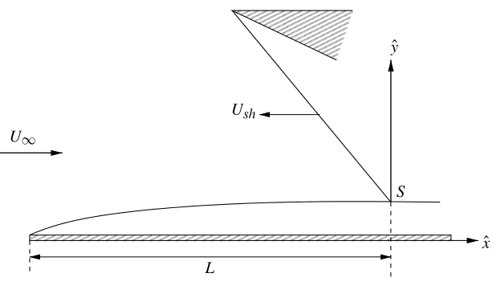
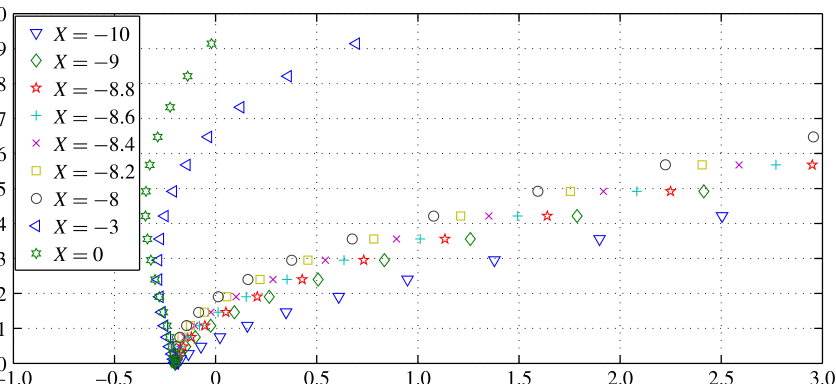
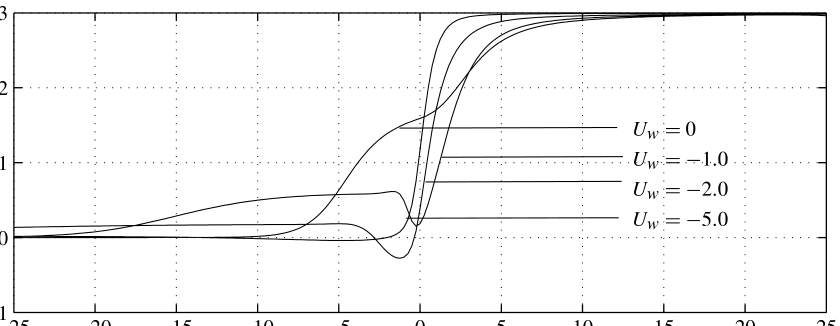
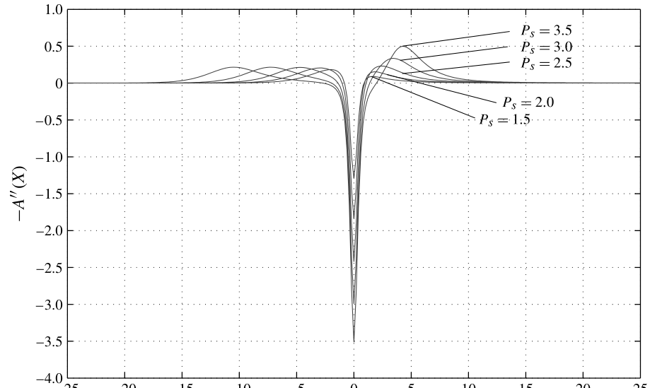

01中文摘要
本文延续Ruban等（2011）的工作，研究二维非定常层流超声速边界层分离。在随壁面运动的坐标系中，入射激波以O(Re^{−1/8})的无量纲速度向下游移动，激波强度和速度可在大于Re^{−1/4}的时间尺度上变化；在随激波运动的坐标系中壁面则向上游运动。采用三重台模型描述干扰，控制方程由Re→∞的Navier–Stokes方程导出；数值上流向用有限差分、法向用Chebyshev配点。结果表明：关于MRS判据是否满足，证据不足；压力从初值上升很慢，并形成上游部分呈楔形的回流区，类似大攻角下的湍流边缘分离。
原始摘要（英文/原文）
This paper is an extension of work on separation from a downstream moving wall by Ruban et al. (J. Fluid. Mech., vol. 678, 2011, pp. 124–155) and is in particular concerned with the boundary-layer separation in unsteady two-dimensional laminar supersonic flow. In a frame attached to the wall, the separation is assumed to be provoked by a shock wave impinging upon the boundary layer at a point that moves downstream with a non-dimensional speed which is assumed to be of order Re−1/8 where Re is the Reynolds number. In the coordinate system of the shock however, the wall moves upstream. The strength of the shock and its speed are allowed to vary with time on a characteristic time scale that is large compared to Re−1/4. The ‘triple-deck’ model is used to describe the interaction process. The governing equations of the interaction problem can be derived from the Navier–Stokes equations in the limit Re → ∞. The numerical solutions are obtained using a combination of finite differences along the streamwise direction and Chebyshev collocation along the normal direction in conjunction with Newton linearization. In the present study with the wall moving upstream, the evidence is inconclusive regarding the so-called ‘Moore–Rott–Sears’ criterion being satisfied. Instead it is observed that the pressure rise from its initial value is very slow and that a recirculation region forms, the upstream part of which is wedge-shaped, as also observed in turbulent marginal separation for large values of angle of attack.
02阅读说明
18 页 JFM 2012 理论与数值研究（三重层/交互边界层），非实验。bundle 含完整正文、图注与参考文献；图 1–14 均有图注与裁剪件。正文公式在文本层断行严重，已用 PDF 第 8–9 页核对式 (2.1)–(2.4)。全文未给 M∞ 与 Re 的具体数值，也未提及壁温/热流边界条件；定量结果主要以图给出，表格为零。信息完整度较高，但可复现的数值细节有限。 文章类型：期刊
03一句话核心与三句话摘要
用三重层理论数值求解激波冲击上游运动壁面的超声速层流分离，发现 MRS 判据不成立、回流区上游呈楔形。
- 缺口：上游运动壁面的非定常超声速层流分离只有 Tsahalis (1977)、Inoue (1981)、Araki (2006) 等少数彼此不一致的结果，Moore–Rott–Sears 判据是否适用尚不清楚。 AI概括
- 方法：在随激波移动的坐标系中令壁速为 O(Re^(−1/8))，用流向有限差分、法向 Chebyshev 配点与 Newton 线性化求解三重层交互边界层方程，主算例为 Uw=−0.2、Ps=3.5，并扫描 Ps=3 下 Uw=0 至 −5。 AI概括
- 结论：压力由初值缓慢抬升、摩阻只有一个显著极小值并在 X≈−8 变负，回流区上游呈楔形；U=0 与 ∂U/∂Y=0 两线不相交，故 MRS 判据在本文上游运动壁面流动中不成立。 原文明确
04核心内容清单
| 要点 | 类型 | 重要性 | 原文依据 | 属性 |
|---|---|---|---|---|
| 本文是 Ruban et al. (2011) 下游运动壁面工作的对称延伸，首次在可压缩超声速来流下数值求解上游运动壁面的层流分离。 | 研究定位 | A | p1 摘要；p7 §1 末段 | 原文明确 |
| 核心假设：激波速度 O(Re^(−1/8))，激波强度与速度在远大于 Re^(−1/4) 的时间尺度上缓变，故可准定常；三重层长度尺度为 Re^(−3/8)。 | 模型假设 | A | p8 §2（式 2.2 后） | 原文明确 |
| 控制方程为交互边界层方程 (2.3a,b)，边界/初始条件 (2.3c–e)、交互律 (2.3f,g)、下游条件 (2.3h) 与附加条件 (2.3i,j)；入射激波用式 (2.4) 平滑，r=0.5。 | 控制方程 | A | p8–9 式 (2.3a)–(2.4) | 原文明确 |
| 数值方法：流向均匀有限差分 + 法向 Chebyshev 配点 + Newton 线性化，8–10 次迭代收敛；Ymax=50、Xmin=−100、Xmax=100、ΔX=0.01、法向 64 点。 | 数值方法 | A | p9 §2 | 原文明确 |
| Uw=−0.2、Ps=3.5 时压力呈平台、摩阻仅一个显著极小值，摩阻约在 X=−8 变负。 | 结果 | A | p9–10；图 5、图 6（p11） | 原文明确 |
| 回流区上游呈楔形，作者将其类比于大攻角下的湍流 marginal separation。 | 流动结构 | A | p9–10；p12–13；图 7（p12） | 原文明确 |
| 零涡量线 ∂U/∂Y=0 存在但不与 U=0 线相交，因此 MRS 判据在本文算例中不被满足（作者措辞为证据不确定）。 | 判据检验 | A | p10；p12–13；图 10（p14） | 原文明确 |
| 壁速越负，压力从初值上升越慢、回流区越长；Uw=−5 时回流区上游延伸超过 X=−100，激波附近压力近间断。 | 参数影响 | A | p11；p12–13；图 11、图 12（p14–15） | 原文明确 |
| −d²A/dX² 在负 X 处形成正峰，随 Ps 增大而局域化（图 14 坐标重缩放后峰位对齐），作者据此主张 Ps→∞ 极限可定义分离位置。 | 结果/论证 | A | p14–16；图 13（p15）、图 14（p16） | 原文明确 |
| 涡量自壁面向外单调增加、无内部极小，与经典 MRS 速度型的内部涡量极小值相反。 | 判据检验 | A | p15；图 9（p13） | 原文明确 |
| 作者承认：给定下游附着边界条件下回流对无粘流影响必然较小，且分离定义所需的极限过程在本文缩放中不明确；完整 Ps→∞ 渐近分析未做。 | 局限 | A | p11–16 §4 | 原文明确 |
| 本文的 MRS 否定结果与 Inoue (1981a,b)、Araki (2006) 方向一致，却与 Tsahalis (1977) 的 Goldstein 型奇性结论相反，说明上游运动壁面的分离判据仍无共识。 | 文献归纳 | B | p7；p13；p15 | AI概括 |
05引言：研究问题与领域缺口
【原文明确】作者把本文定位为 Ruban et al. (2011) 下游运动壁面工作的延伸，处理二维层流超声速来流中上游运动壁面的边界层分离。引言梳理了三条线索：Prandtl (1904) 的边界层图像与 Goldstein (1948) 在分离点处的奇性；Neiland (1969)、Stewartson & Williams (1969) 等建立的三重层/粘性–无粘干扰理论；以及 Moore (1958)、Rott (1956)、Sears (1956)、Sears & Telionis (1975) 提出的 MRS 判据（在随分离移动的坐标系中 u=0 且 ∂u/∂y=0）。作者强调 MRS 判据本身争议不大，但分离处流线形状与是否存在滞止点并不清楚（图 1 给出 Moore、Sears & Telionis、Van Dommelen & Shen 三种不同图像），并用 Ludwig (1964) 的“假想壁面吹/吸”类比说明三者差别。已有上游运动壁面研究（Tsahalis 1977 的 Goldstein 型奇性结论、Inoue 1981 未见 u 与摩阻同时为零、Araki 2006 弱激波近似下的压力骤降区）多为不可压缩或缺乏可信下游流动，且彼此不一致。本文目标是在可压缩超声速条件下、用三重层模型给出该问题的数值解并检验 MRS 判据。
06流动条件与几何构型
| 项目 | 数值/描述 | 依据 | 备注 |
|---|---|---|---|
| 来流马赫数 M∞ | O(1) 且大于 1；未给具体数值 | p8 §2（式 2.1 后） | 原文仅写 M∞ is an order-one quantity greater than unity |
| 雷诺数 Re | 假设很大；未给具体数值（Re=ρ∞U∞L/μ∞） | p8 式 (2.2) | L 为平板前缘到激波入射点 S 的距离 |
| 激波速度尺度 | O(Re^(−1/8))；Ush 为相应无量纲速度 | p8 §2 | 壁速 Uw=−Ush，本文算例 Uw 为负 |
| 准定常条件 | 激波速度与强度变化的时间尺度远大于 Re^(−1/4) | p8 §2 | 在一个 Re^(−3/8) 三重层长度尺度上变化渐近小 |
| 工况 A（主算例） | Uw=−0.2，Ps=3.5 | p10；图 5–10（p11–14） | 压力/摩阻/流线/速度型/涡量全套结果 |
| 工况 B（壁速扫描） | Ps=3，Uw=0 | p11；图 11、图 12 | 静止壁面参照；摩阻曲线与横轴相交，可见分离/再附点 |
| 工况 C（壁速扫描） | Ps=3，Uw=−0.2 | p11；图 11、图 12 | 与工况 A 的 Ps 不同，属独立工况 |
| 工况 D（壁速扫描） | Ps=3，Uw=−2 | p11；图 11、图 12 | 压力从初值上升非常缓慢 |
| 工况 E（壁速扫描） | Ps=3，Uw=−5 | p11；图 11、图 12 | 回流区上游延伸超过 X=−100（另用 Xmin=−150 计算）；激波附近压力近间断 |
| 工况 F（激波强度扫描） | Uw=−0.2，Ps 取多个值（图中未标注具体数值） | p14–16；图 13、图 14（p15–16） | −d²A/dX² 峰随 Ps 增大而局域化 |
| 网格验证工况 | Ps=2.0，Uw=−0.5 | p9；图 3、图 4（p10） | 与结果部分工况不同，不可与工况 A–F 合并 |
| 几何构型 | 二维平板，上方楔产生斜激波，入射点 S 距前缘 L；计算域 X∈[−100,100]、Y∈[0,50] | p7–9；图 2（p8） | 楔与激波随激波坐标系相对平板运动 |
| 边界层状态 | 层流 | p1 摘要；p7 §1 | 全文限定 laminar |
| 气体模型 | 完全气体，比热比 γ | p7 §2 | γ 数值文中未提及 |
| 壁温/热流 | 文中未提及 | 全文 | 未给壁温、绝热或等温条件 |
| 来流湍流度/噪声 | 不适用 | 全文 | 理论/数值研究，无风洞来流品质参数 |
07核心现象与关键参数
| 参数 | 定义 | 数值 | 关系/说明 | 依据 |
|---|---|---|---|---|
| Ps | 激波强度，即三重层尺度下的压力跃升（交互律 2.3f 中的阶跃幅值） | 3.5（工况 A）；3（工况 B–E）；2.0（网格验证）；图 13/14 中取多个值 | 随 Ps 增大，−d²A/dX² 峰更局域，回流区更长 | p9 式 (2.3f,g)；图 5、图 11、图 13 |
| Uw | 随激波坐标系中的无量纲壁面速度，Uw=−Ush | 0；−0.2；−2；−5（另网格验证 −0.5） | Uw<0 表示壁面向上游运动；|Uw| 越大压力上升越慢、回流区越长 | p8 §2；图 11、图 12 |
| P | 三重层尺度下的无量纲压力 | 主算例在 X≈−8 之后形成平台，平台值约 3.5 量级（图 5 纵轴） | P=PsH(X)−dA/dX | p9 式 (2.3f)；图 5（p11） |
| τw | 无量纲壁面剪应力（∂U/∂Y|Y=0） | Uw=−0.2、Ps=3.5 时约在 X=−8 由正变负，只有一个显著极小值 | 符号反转仅表示近壁流体相对壁面向上游运动，不代表流动反转 | p9–10；图 6（p11）、图 12（p15） |
| A(X) | 粘性子层产生的位移函数，出现在外缘匹配 U→Y+A(X) | 未给数值；以 −d²A/dX² 形式作图 | dA/dX 由交互律与压力耦合 | p9 式 (2.3e,f)；图 13、图 14 |
| −d²A/dX² | 位移函数二阶负导数，用于表征分离处流线快速弯曲（Sychev–Smith 分离的局域正峰） | 随 Ps 增大在负 X 处形成更局域的正峰（图 13 纵轴到 −4，图 14 重缩放） | 峰位被作者视为 Ps→∞ 极限下的分离位置 | p14–16；图 13（p15）、图 14（p16） |
| Ymax | 法向计算域上边界 | 50（默认）；15、75（验证） | 结果对 Ymax 不敏感（图 4） | p9；图 4（p10） |
| Xmin / Xmax / ΔX | 流向计算域与步长 | −100 / 100 / 0.01（Uw=−5 时另用 Xmin=−150） | 决定回流区能否被完整捕捉 | p9 §2；p11 |
| 法向网格点数 | Chebyshev 配点数目 | 64（默认）；70、90（验证） | 与流向点数组成 8001×64、1601×70、1201×90 | p9 §2；图 3 |
| r | 式 (2.4) 中入射激波平滑参数 | 0.5 | 控制激波压力跃升的空间平滑宽度 | p9 式 (2.4) |
08方法与数据
【原文明确】平板置于均匀二维超声速完全气体来流中，上方楔产生斜激波并在 S 点冲击边界层，楔与激波以无量纲速度 Ush 平行于平板运动；采用随激波移动的坐标系，则壁面以 Uw=−Ush 运动（本文算例 Uw<0，即壁面向上游运动）。假设激波速度 O(Re^(−1/8))，且激波强度与速度在远大于 Re^(−1/4) 的时间尺度上缓变，从而可作准定常处理。控制方程为按 Ruban et al. (2011) 缩放的三重层交互边界层方程 (2.3a,b)，配以壁面无滑移/无穿透 (2.3c)、上游初始剖面 U=Y+Uw (2.3d)、外缘匹配 U→Y+A(X) (2.3e)、交互律 P=PsH(X)−dA/dX (2.3f,g)、下游 P=Ps (2.3h) 及两个附加条件 (2.3i,j)。数值上与 Korolev, Gajjar & Ruban (2002) 类似：流向均匀有限差分、法向 Chebyshev 配点、Newton 线性化，通常 8–10 次 Newton 迭代收敛；Ymax=50，Xmin=−100，Xmax=100，ΔX=0.01，法向 64 点；入射激波用式 (2.4) 平滑，r=0.5。用 8001×64、1601×70、1201×90 三套网格及不同 Ymax 做无关性检查（图 3、图 4），结论是结果与网格无关。未做实验对比，也未给出与解析解的定量比较。
| 项目 | 内容 | 依据 | 备注 |
|---|---|---|---|
| 理论框架 | 三重层（粘性–无粘交互）理论；交互边界层方程由 Navier–Stokes 在 Re→∞ 极限导出（本文直接引用 Ruban et al. 2011 的缩放） | p1 摘要；p8 §2 | 本文未重复渐近推导 |
| 控制方程 | 二维不可压形式的三重层边界层方程 (2.3a,b)，压力梯度由交互律给定 | p8 式 (2.3a,b) | 可压缩性体现在外部超声速流动与 Ps 的定义中 |
| 空间离散 | 流向均匀有限差分；法向 Chebyshev 配点 | p9 §2 | 与 Korolev, Gajjar & Ruban (2002) 类似 |
| 非线性求解 | Newton 线性化，通常 8–10 次迭代收敛 | p9 §2 | 收敛判据文中未提及 |
| 计算域与网格 | Ymax=50，Xmin=−100，Xmax=100，ΔX=0.01，法向 64 点；总网格 8001×64 | p9 §2 | Uw=−5 时改用 Xmin=−150 |
| 网格无关性验证 | 8001×64、1601×70、1201×90 三套网格；Ymax=15、50、75 三种取值；摩阻曲线重合 | p9；图 3、图 4（p10） | 仅在 Ps=2.0、Uw=−0.5 下验证 |
| 激波处理 | 式 (2.4) 平滑激波，r=0.5 | p9 式 (2.4) | 避免交互律中的阶跃不连续 |
| 边界条件 | 壁面 U=Uw、V=0；上游 U=Y+Uw；外缘 U→Y+A(X)；下游 P=Ps；附加 ∂U/∂Y=1（X=−∞ 与 Y=∞） | p8–9 式 (2.3c–j) | 下游条件体现粘性–无粘交互的上游影响 |
| 实验/文献验证 | 未做实验对比；数值格式与参数沿用 Ruban et al. (2011) | p9 §2 | 文中未给出与解析解或实验的定量比较 |
| 结果提取 | 压力、摩阻、流线、速度型、涡量、−d²A/dX² 等值线/曲线 | p10–16 图 5–14 | 无表格；定量值需读图 |
09核心推导与公式
从 Navier–Stokes 方程在 Re→∞ 的三重层极限得到可解的交互边界层问题：把壁速限制在 O(Re^(−1/8))，使非定常效应与三重层尺度匹配；在随激波移动的坐标系中把问题化为准定常的边界层方程 + 无粘区给出的压力–位移交互律，再用有限差分/Chebyshev/Newton 求数值解。本文只复述该渐近结果，完整推导见 Ruban et al. (2011)。
关键假设
- 二维、层流、完全气体，M∞=O(1)>1，Re→∞
- 壁面速度 O(Re^(−1/8))，故非定常项与三重层惯性项同阶
- 激波强度与速度在远大于 Re^(−1/4) 的时间尺度上变化，可作准定常
- 三重层流向长度尺度 Re^(−3/8)，法向尺度相应缩放
- 无粘外层为超声速线性化流动，给出压力–位移交互律
- 下游流动附着并由 P=Ps 给定，允许上游影响通过边界层传播
推导过程
以来流速度、声速定义 M∞，以平板前缘到激波入射点的距离 L 为参考长度定义 Re；二者是后续尺度分析的两个基本无量纲量。
设激波速度与 Re^(−1/8) 同阶，记其无量纲值为 Ush。在随激波移动的坐标系中平板以 Uw=−Ush 反向运动；本文所算工况 Uw<0，即壁面相对激波向上游运动。该限制保证非定常项进入三重层主阶。
若激波在扫过 Re^(−3/8) 量级的三重层长度时速度与强度的变化渐近小，则可忽略特征时间上的显式非定常项，把每一时刻当作定常问题求解。
在缩放变量 (X,Y) 下得到二维连续性方程与流向动量方程；动量方程中压力梯度由外部无粘流决定，粘性项只保留法向二阶导数。
壁面取无滑移、无穿透；远上游与未受扰边界层匹配，速度型为线性剪切叠加壁速。
与边界层主体匹配要求 U→Y+A(X)；无粘区分析给出压力由位移函数的流向斜率与入射激波阶跃共同决定。
由于交互允许上游影响，需给定下游状态 P=Ps；另有两个由远场剪切导出的附加条件 ∂U/∂Y=1。
为数值实现，把阶跃 H(X) 替换为光滑函数，得到式 (2.4)；本文取 r=0.5。这一步是数值正则化，不改变渐近问题。
对 (2.3a,b) 与 (2.4) 作流向有限差分、法向 Chebyshev 配点，并对非线性项 Newton 线性化；每步解线性系统，8–10 次迭代收敛，从而得到 P、τw、A(X)、速度与涡量场。
适用边界：文中没有给出由 Navier–Stokes 到三重层的逐阶渐近推导，只引用 Ruban et al. (2011) 的缩放与方程；推导仅适用于二维层流、完全气体、壁速 O(Re^(−1/8))、激波缓变的情形。壁温/热流未进入模型，可压缩性仅通过外部超声速流动与 Ps 体现。分离定义的极限过程（Re→∞ 或 Ps→∞）在文中被作者自己指出并不完全明确。
10结果：主要发现与关键证据
【原文明确】主算例 Uw=−0.2、Ps=3.5（图 5–10）：压力形成“平台”（图 5），摩阻只有一个显著极小值（图 6），摩阻约在 X=−8 处变负；流线图（图 7）显示一个回流涡，其上游部分为楔形，作者称与 Scheichl & Kluwick (2007) 的湍流 marginal separation 结构相似。速度型（图 8）与速度/涡量分布（图 10）中虽存在 ∂U/∂Y=0 的零涡量线，但它不与 U=0 线相交，故对 MRS 判据而言“证据不确定”。图 5 与图 7 还显示在 X≈−11 附近逆压梯度强烈增长，作者认为这是本算例未出现 MRS 点的可能解释。壁速影响（Ps=3，图 11、图 12）：Uw=0 时摩阻曲线与横轴相交，可清楚看到分离点与再附点；Uw=−2 与 −5 时压力从初值上升非常缓慢；Uw=−5 时回流区向上游延伸超过 X=−100（另用 Xmin=−150 计算确认），激波附近压力接近间断、类似无粘理论；随 |Uw| 增大回流区长度增加（p12–13）。激波强度影响（Uw=−0.2，图 13、图 14）：−d²A/dX² 在负 X 处出现正峰，峰随 Ps 增大而更局域（图 14 重新缩放坐标使峰位对齐），作者据此主张在 Ps→∞ 极限下可定义有意义的分离位置；但同区域并未出现 MRS 条件，且涡量自壁面向外单调增加（图 9），与经典 MRS 速度型具有内部涡量极小值不符。
| 发现 | 证据 | 证据类型 | 强度 | 位置 | 属性 |
|---|---|---|---|---|---|
| Uw=−0.2、Ps=3.5 时压力形成平台，摩阻只有一个显著极小值，并在 X≈−8 处由正变负。 | 压力/摩阻分布曲线；摩阻过零点约 X=−8 | 定量结果（读图） | 强 | p9–10；图 5、图 6（p11） | 原文明确 |
| 回流区上游呈楔形，整体结构与湍流 marginal separation 类似。 | 流线图显示单个回流涡，上游端为尖楔形 | 流动结构 | 强 | p9–10、p12–13；图 7（p12） | 原文明确 |
| 零涡量线 ∂U/∂Y=0 与零流向速度线 U=0 不相交，MRS 判据不被满足。 | 图 10 中两条等值线在分离区附近保持分离；图 8 速度型无 MRS 平台 | 判据检验 | 强 | p10；图 8、图 10（p12、p14） | 原文明确 |
| X≈−11 附近逆压梯度强烈增长，被作者列为未形成 MRS 点的可能原因。 | 压力曲线在该处陡升；流线在该处脱离壁面 | 机制证据 | 中 | p10；图 5、图 7 | 原文明确 |
| 壁面向上游速度越大，压力自初值上升越慢、回流区越长；Uw=−5 时回流区上游超过 X=−100，激波附近压力近间断。 | 图 11 压力曲线随 Uw 变负而更平缓；图 12 摩阻曲线；Xmin=−150 的补充计算 | 参数影响 | 强 | p11、p12–13；图 11、图 12（p14–15） | 原文明确 |
| −d²A/dX² 的正峰随 Ps 增大而在负 X 处局域化，作者据此主张 Ps→∞ 极限下存在有意义的分离位置。 | 图 13 峰形随 Ps 变化；图 14 重缩放坐标后峰位对齐 | 标度/极限论证 | 中 | p14–16；图 13（p15）、图 14（p16） | 原文明确 |
| 涡量自壁面向外单调增加，没有经典 MRS 速度型所要求的内部涡量极小值。 | 涡量等值线图及 U=1 等值线附近的涡量分布 | 判据检验 | 强 | p15；图 9（p13）、图 10（p14） | 原文明确 |
| 结果对网格与法向域高度不敏感。 | 三套网格与三种 Ymax 的摩阻曲线几乎重合（Ps=2.0、Uw=−0.5） | 数值验证 | 强 | p9；图 3、图 4（p10） | 原文明确 |
11机制解释与论证链
【原文明确】在随激波移动的坐标系中，壁面向上游运动，近壁流体相对壁面的下游速度被削弱，摩阻可在 U=0 之前就变号，因此摩阻符号反转不再等价于流动反转（p9）。激波造成的压力跃升经交互律 P=PsH(X)−dA/dX 与位移耦合：即使上游压力很小，只要 dA/dX 相应变化，也能产生显著的流线抬升，这解释了为何大 |Uw| 时压力在很长距离内上升极慢而回流区却持续向上游延伸（p11、p13）。【AI概括】回流区的楔形上游端可理解为壁面运动把近壁低速流体持续向上游输运、而外层流体仍向下游流动，二者在分离线附近形成尖劈状包络；作者仅给出与湍流 marginal separation 的形貌类比，未给出定量机制。【AI推断】X≈−11 的强逆压梯度与 MRS 点缺失之间的因果链（作者称为 potential explanation）尚未被独立验证。
12讨论：结论、贡献与局限
【原文明确】作者把“压力缓慢上升 + 回流区楔形上游”与三重层交互律 (2.3f) 联系起来：按该式，很小的上游压力即可产生显著的流线位移，因此在大 |Uw| 时压力可以在很长距离内近乎不变而位移持续增长。对 MRS 判据，作者给出三条否定证据：图 10 中 U=0 与 ∂U/∂Y=0 不相交；图 9 涡量单调增、无内部极小；X≈−11 的强逆压梯度与 Moore (1958)、Van Dommelen & Shen (1983a) 假设的“给定光滑逆压梯度”不符。作者还转述审稿人质疑：本文的物理缩放与给定的下游附着边界条件，使回流对上方无粘流的影响必然较小，这种流动在多大程度上“有意义地”描述分离值得商榷；更深层的问题是分离定义需要极限过程，而本文缩放流动中物体尺度雷诺数并非明确地出现。作者用 −d²A/dX² 峰在 Ps 增大时的局域化回应这一质疑，但明确表示完整的 Ps→∞ 渐近分析超出本文范围。局限还包括：仅二维层流、完全气体；未讨论壁温；未给出 M∞、Re 的具体值。
作者结论
【原文明确】在壁速 O(Re^(−1/8)) 的三重层框架下，上游运动壁面的超声速层流分离表现为：压力自初值极缓慢上升并形成平台；回流区上游呈楔形；摩阻只有一个显著极小值，其符号反转不代表流动反转。速度与涡量分布未显示 MRS 判据（U=0 与 ∂U/∂Y=0 不相交，涡量单调增），作者因此认为 MRS 判据不适用于本文所算的上游运动壁面流动，这与 Inoue (1981a,b) 及 Araki (2006) 的结果方向一致。作者同时指出，在 Ps→∞ 极限下 −d²A/dX² 的局域峰可给出一个数学/物理上有意义的分离位置，但即使如此，MRS 条件也不会在该区域近似成立，其实际价值有限。
主要贡献
- 给出可压缩超声速来流下上游运动壁面层流分离的三重层数值解，补足 Ruban et al. (2011) 只做下游运动壁面的空白。
- 用 U=0 与 ∂U/∂Y=0 两线是否相交、涡量是否有内部极小两条独立证据检验 MRS 判据，结论为不成立。
- 揭示大 |Uw| 下压力极缓上升与回流区超长上游延伸（Uw=−5 时超过 X=−100）的定量图像。
- 提出以 −d²A/dX² 峰的局域化在 Ps→∞ 极限下定义分离位置，并公开承认该定义的极限过程尚不严格。
局限与未解决问题
【原文明确】作者承认：(1) 给定下游附着边界条件与本文物理缩放，使回流对上方无粘流的影响必然较小，流动在多大程度上“有意义地”描述分离存疑（审稿人提出）；(2) 分离的定义需要极限过程，而本文缩放流动中物体尺度 Reynolds 数并非明确地出现；(3) 完整的 Ps→∞ 渐近分析超出本文范围；(4) 结果与 Tsahalis (1977) 的 Goldstein 型奇性结论不一致，后者需要独立确认。【AI概括】仅二维层流、完全气体；未给 M∞、Re、γ 的具体值，也未给壁温/热流条件，无法直接映射到具体风洞或飞行工况；网格无关性只在 Ps=2.0、Uw=−0.5 一个工况验证；定量数据几乎全部以图给出，无表格。【AI推断】Uw 仅允许 O(Re^(−1/8))，故不能外推到壁面速度与来流同阶的真实移动壁面/抽吸控制。
13对高速流动与工程的意义
【原文明确】本文把“运动壁面分离”这一长期只有不可压缩或缺乏可信下游流动的研究，推进到可压缩超声速、带粘性–无粘交互的框架，并给出 MRS 判据在该构型下失效的具体证据；这对以 MRS 判据解释非定常分离、或把运动壁面类比用于分离控制的作法构成约束。【AI推断】对高速进气道/隔离器而言，文中“小上游压力即可造成大流线位移”的交互律图像，可作为理解激波串上游影响长度的理论参照；但由于壁速被限制在 Re^(−1/8) 量级且下游条件理想化，不能直接用于预测真实隔离器内分离点或低频振荡。可借鉴之处主要是三重层数值方法（Chebyshev + Newton）与用 −d²A/dX² 峰定位分离的判据思路。
14核心图件




15可引用原文素材
| 原文短句 | 可支持的观点 | 位置 | 使用建议 |
|---|---|---|---|
| “the evidence is inconclusive regarding the so-called ‘Moore–Rott–Sears’ criterion” | MRS 判据在上游运动壁面情形下未获确认 | p1 摘要 | 引言中说明 MRS 判据适用性的反例 |
| “the pressure rise from its initial value is very slow” | 大 |Uw| 时压力平台/缓慢上升 | p1 摘要；p11 | 描述上游运动壁面的压力特征 |
| “a recirculation region forms, the upstream part of which is wedge-shaped” | 回流区楔形上游端 | p1 摘要；p9–10 | 与湍流 marginal separation 类比时的引文 |
| “reversal of the sign of the skin friction does not indicate flow reversal” | 运动壁面下摩阻符号反转的物理含义 | p9 §3 开头 | 提醒勿把 τw<0 当作分离判据 |
| “The skin friction turns negative at approximately X = −8” | 主算例摩阻过零点位置 | p10 | 定量引用（Uw=−0.2, Ps=3.5） |
| “it does not intersect the zero-streamwise-velocity line” | 零涡量线与 U=0 线不相交，MRS 不成立 | p10 | 判据检验的核心引文 |
| “As Uw is decreased, the length of the recirculation region increases” | 壁速越负回流区越长 | p12–13 §4 | 参数趋势引用 |
| “our results show a monotonic increase in vorticity away from the wall” | 无内部涡量极小，与 MRS 速度型相反 | p15 | 第二条否定 MRS 的证据 |
16最终核验
| 核验项 | 结论 |
|---|---|
| 仅基于全文 | 是。仅使用 bundle 的正文、图注与图件清单；未引入外部文献知识。公式 (2.1)–(2.4) 的符号与编号用原 PDF 第 8–9 页核对。 |
| A 级要点有依据 | 是。所有 A 级要点均有页码/式号/图号对应：模型假设 p8；方程 p8–9；数值方法 p9；主算例结果 p9–10 与图 5–7；MRS 检验 p10 与图 10；壁速影响 p11 与图 11–12。 |
| 属性标注 | 是。原文明确/AI概括/AI推断逐条标注；图注未给出的结论均归入 AI 概括或推断，未冒充作者原话。 |
| 覆盖范围 | 覆盖 IMRaD 四节、14 项提取要求中的主要项（阅读说明、一句话、三句话、核心清单、问题缺口、工况、关键参数、方法、推导、机制、发现、结论与局限、意义、引文、核验）。 |
| 无编造 | 是。未编造页码、图号、公式、数值；M∞、Re、γ、壁温等未给值均写“未给具体数值”或“文中未提及”；图 13/14 峰的具体数值未臆测。 |
需回原文确认
- M∞、Re、γ 的具体数值全文未给，如何映射到实际风洞或飞行条件？
- 壁温/热流边界条件未说明，三重层下边界层是绝热还是等温？可压缩性仅通过 Ps 体现是否自洽？
- Uw=−5 时以 Xmin=−150 计算的结果未展示，回流区上游端究竟延伸到何处？
- 图 9 涡量等值线上的数值标签（如 0.0334122、−0.0305433）物理含义与量级如何解读？
- −d²A/dX² 峰位随 Ps 的定量标度关系（峰高、峰位 vs Ps）文中未给出，能否从图 13/14 可靠提取？
- 作者把楔形回流区类比于湍流 marginal separation，这一类比是否仅停留在形貌层面？
- 下游 P=Ps 的附着条件对回流区上游延伸长度的影响有多大？若改为其他下游条件结论是否改变？
- Tsahalis (1977) 的 Goldstein 型奇性结论与本文矛盾，哪一种更可信？文中仅说需独立确认。
17关联文献
依据标签、板块、构型与作者脉络自动关联，可据此追踪同一问题的前序与后续工作。
18引用格式
选择期刊风格后复制；出处保留原刊名。BibTeX 可直接用于 LaTeX。
引用格式
Yapalparvi, R. & Van Dommelen, L. L. 2012 Numerical solution of unsteady boundary-layer separation in supersonic flow: upstream moving wall. Journal of Fluid Mechanics 706, 413–430. https://doi.org/10.1017/jfm.2012.261
PDF上传 PDF 并更新本页
本页缺少全文、摘要或图件时，可在浏览器本地补入 PDF。解析完全在本机完成，不上传网络；完成后会更新本页的 PDF 打开链接、原摘要、IMRaD 机器抽取、关键句与含图页面。复杂的公式语义与中文深度解读仍以原文和既有精读记录为准。
Zotero 笔记摘录
2011年Ruban等人的工作延续，研究了上游运动壁面的分离 通过边界层厚度厚度的曲率变化的尖峰作为判断分离的依据，即A’’(x)/dx，此处对应于流线剧烈弯曲的地方，相当于分离点。 从本文的 Sychev–Smith 分离讨论中，dp/dx=-A’’的局部正峰可以被用作分离位置的近似数学特征。